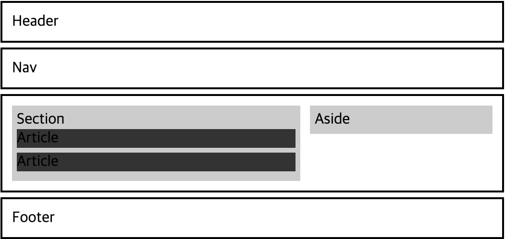

⭐️ 시멘틱 요소(Semantic Element)를 사용하는 이유
-
검색 엔진 최적화(SEO:Search Engine Optimization)에 용이하다.
목적에 맞는 태그를 사용하여 검색엔진에 의미를 전달해주어 더욱 빠르고 효율적이게 문서를 읽을 수 있기 때문이다.
-
웹 접근성이 향상된다.
화면을 직접적으로 보기 힘드신 분들이 스크린 리더 프로그램을 사용할 때, 시멘틱 태그를 사용한 웹페이지가 스크린 리더의 효율이 올라간다. 시멘틱 태그로 인해 웹 접근성이 향상되는 것을 알 수 있다.
-
개발자의 가독성과 유지보수가 용이하다.
기존에 시멘틱 태그가 없이 작성된 문서는 div를 통해 코드를 작성하였는데, 이는 header인지 nav인지 알기 쉽지않아 가독성이 떨어진다. 하지만 시멘틱 태그를 작성하면 태그의 이름을 보고 구분이 가능하기 때문에 가독성이 좋아지며, 가독성이 좋아지면 유지보수하기에 더욱 용이해진다.
⭐️ header(헤더)
header(헤더)란 문서의 맨 처음에 등장하는 태그를 칭한다. header(헤더)태그 안에는 주로 로고,네비게이션 등이 포함되어있다.
⭐️ nav(네비게이션)
nav(네비게이션)은 HTML의 목차를 주로 포함하고 나타내며, 다른 페이지로 이동을 위한 링크를 주로 사용한다.
⭐️ main(메인)
main(메인)은 HTML 문서 내의 주요 내용을 지정하여 작성한다. main(메인) 태그는 문서 내에서 한번만 사용할 수 있다.(두번이상 main(메인)태그 사용 불가능)
⭐️ section(섹션)
section(섹션)은 HTML 문서 내의 연관성이 있는 내용들 즉, 같은 주제를 가진 내용들을 묶어 그룹화하여 사용한다.
⭐️ article(아티클)
article(아티클)은 웹 사이트상의 내용들을 얘기한다. 주로 기사, 포스트 등에 사용된다.
⭐️ aisde(사이드)
aisde(사이드)는 본문 내용 이외의 것을 작성할 때 사용한다. 필수 요소가 아니므로 주로 광고를 삽입하거나, 주제와 맞지 않는 링크를 등록하는 용도로 사용한다.
⭐️ footer(푸터)
footer(푸터)는 맨 하단에 작성되는 바닥글을 의미하며, 주로 웹 제작자의 정보나 회사정보, 저작권 등을 작성한다.
<header>
<nav><nav>
</header>
<main>
<section>
<article></article>
<article></article>
</section>
<aside></aside>
</main>
<footer></footer>

시멘틱 태그는 위의 예시와 같이 주로 사용되며, 무조건 위의 예시처럼 작성되어야 하는 것은 아니다. 태그를 올바르게 작성한다면, 시멘틱 태그는 작성자마다 사용하는 방법은 다를 수 있다.